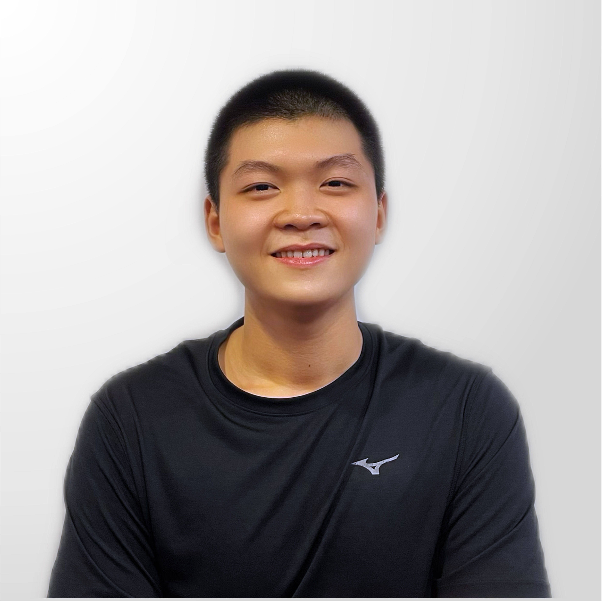

Ngo Tran Bao Thach

- Personal Information:
- Name: Ngo Tran Bao Thach
- Student ID: s3927021
- Birthdate: 17/1/2003
- Introduction:
- Future Plan:
My full name is Ngo Tran Bao Thach, my English name is Thaddeus and I am from team 925. I am an RMIT freshman, my student ID is s3927021 and currently, I am studying for the Bachelor of Information Technology. I was born in Ho Chi Minh city, and I have been living here since. When it comes to languages, I can speak Vietnamese and English because those are compulsory languages in Vietnam’s educational program. However, I had learned Simplified Chinese for a few months before the first outburst of the COVID-19 pandemic. In addition, I am an active person, so I love playing sports and playing basketball, swimming, and working out at the gym are my favorite ones. Furthermore, I love travelling, listening to V-pop and US-UK music to be more precise, and I love cooking. I find it very interesting to be creative in making my food. About pets, I would love to have a Siberian Husky and fishes as my pets because I find a Siberian Husky very cute, and watching the fishes swimming in the tank can be very relaxing and satisfying although I only have a fish tank at home currently and I hope to have a Siberian Husky soon.
I find Data Science very intriguing in IT because data appears everywhere, and it plays a vital role in many enterprises. My interest in IT commenced when I was still a senior student in high school. After taking further research on Data Science, I made up my mind to choose my career as a Data Analyst to embark on after graduating from university. Although I am just a freshman and I have not had any professional or IT-related experience, I will do my best as a student. I am going to finish my study at RMIT University as a Bachelor of Information Technology with a minor in Data Analytics. During my study, I will join clubs, competitions, and online courses to gain relevant skills as well as to enrich my knowledge about Supply chain, Finance, Marketing, etc. Moreover, I will search for internships during that time so that I can gain as much real-life working experience as possible to get a job as a Data Analyst after graduating.